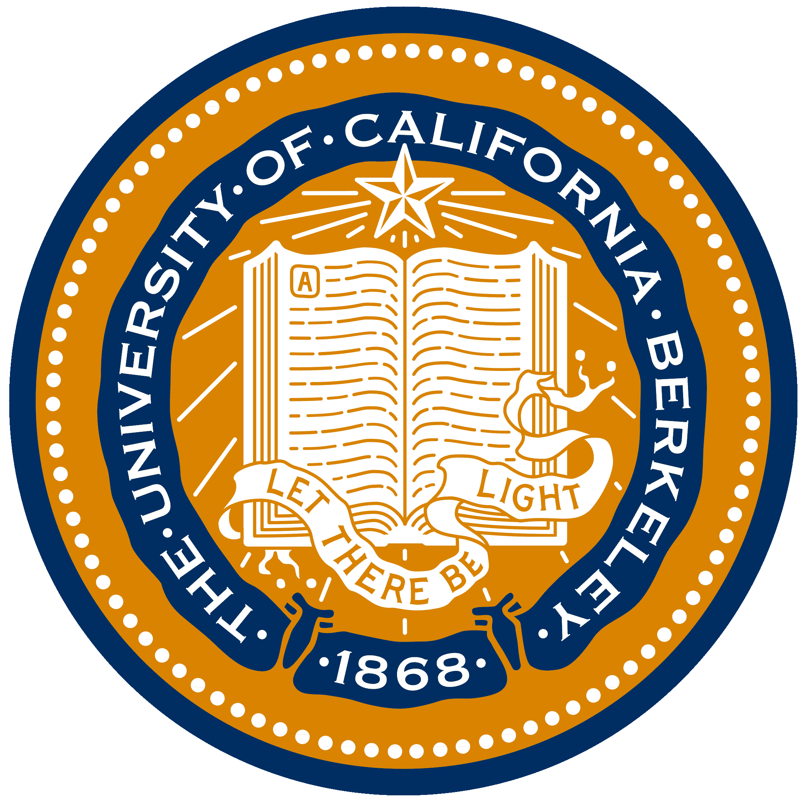

Abdul Muyeed Bhuiya

Ph.D. Candidate in Bioengineering
UC Berkeley-UCSF
About Me
I am a Ph.D. candidate in Bioengineering at the UC Berkeley-UCSF Bioengineering Graduate Program. My research centers on creating innovative point-of-care diagnostic assays and devices, and leveraging CRISPR technology for rapid, multiplexed and quantitative RNA detection.
During my PhD, I developed innovative Cas13-based diagnostic platforms for direct RNA detection from patient samples with compact fluorescence detectors and multiplexing via barcoded beads. This system not only facilitates the simultaneous detection of multiple RNA targets but also provides a novel framework for studying Cas13 reaction kinetics on a 2D surface, offering new insights into its mechanistic behavior. Additionally, I designed and deployed cost-effective, AI-powered mobile microscopy platforms for detecting soil-transmitted helminth eggs in stool samples in Bangladesh, translating cutting-edge research into real-world public health impact.
My experience extends to leading and collaborating with cross-functional, interdisciplinary teams across the globe. My passion lies in advancing digital healthcare technologies that significantly improve access to basic healthcare, enhance public health surveillance, and support targeted interventions. Beyond my research, I am deeply committed to education and mentorship. I helped design educational programs and mentored a diverse array of students, including those from underrepresented backgrounds, spanning high school to graduate levels.
Education
Doctor of Philosophy (Ph.D.), Bioengineering |
📍 UC Berkeley - UCSF Joint Program | 📆 Aug 2019 - Present
- Research Advisor: Prof. Daniel Fletcher
- Concentration: Device & Molecular Assay Development for Point-of-Care
- GPA: 3.72/4.00
Master of Science (M.S.), Biomedical Engineering
📍Boston University | 📆 Sep 2017 - Aug 2019
- Research Advisor: Prof. Ahmad Khalil
- GPA: 3.81/4.00
Bachelor of Science (B.S.), Molecular & Cellular Biology
📍 University of Illinois at Urbana-Champaign | 📆 Aug 2013 - May 2017
- Minor: Chemistry
- GPA: 3.90/4.00, Magna Cum Laude
Education

Ph.D., Bioengineering
Aug 2019 - Present
- Minor: Development Engineering
- Concentration: Device & Molecular Assay Development
- GPA: 3.72/4.00
M.S., Biomedical Engineering
Sep 2017 - Aug 2019
- Concentration: Biosensors
- GPA: 3.81/4.00
B.S., Molecular & Cellular Biology
Aug 2013 - May 2017
- Minor: Chemistry
- GPA: 3.90/4.00
Education
Ph.D., Bioengineering
Aug 2019 - Present
- Minor: Development Engineering
- Concentration: Device & Molecular Assay Development
- GPA: 3.72/4.00
M.S., Biomedical Engineering
Sep 2017 - Aug 2019
- Concentration: Biosensors
- GPA: 3.81/4.00
B.S., Molecular & Cellular Biology
Aug 2013 - May 2017
- Minor: Chemistry
- GPA: 3.90/4.00